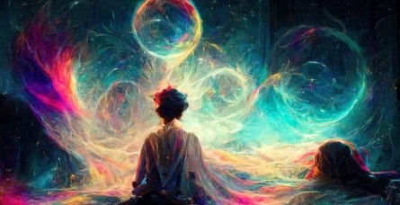
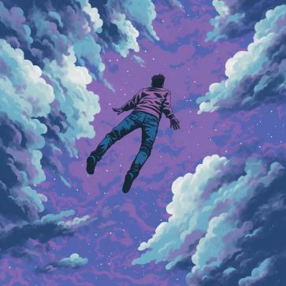
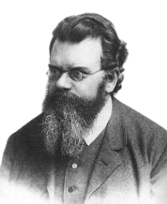
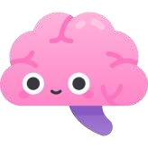
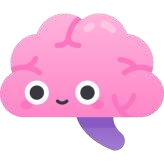
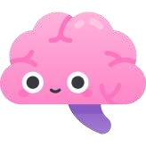

Träumen als Sinn des Lebens
Dieser Beitrag erschien ursprünglich im Spickzettel/Dezember 2024. Zur Originalausgabe
Wie dem auch sei, Probieren geht über Studieren, so frage ich: Wie wäre es mit folgendem Ansatz? Entgegen den Standardtheorien geht dieser von einem unbewussten Vorgang aus, welcher unabhängig von Wohlstand, Gesellschaft, dem eigenen Glück und auch jeglicher Mathematik stattfinden kann. Auch nimmt unser Schlaf hier eine höhere Rolle ein, als nur zum obligatorischen Energieauf tanken. Generell könnte man sagen, hier wird dieses Tag-Nacht-System getauscht: Der Sinn des Lebens besteht nämlich ganz einfach darin, zu träumen.
Im Laufe der Zeit haben sich eine Menge Theorien zum Thema Träumen entwickelt, wissenschaftlich gesehen meist die, im Schlaf würde man unbewusst Gedankengut verarbeiten, sprich sich angstbesetzten Inhalten stellen, Wünsche erfüllen oder auch Probleme aus der realen Welt lösen. Dies ist heute die am weitesten verbreitete, wenn auch am vielfältigsten ausgelegte. In der Vergangenheit wurde den Träumen allerdings eine höhere Bedeutsamkeit zugeschrieben: Im alten Mesopotamien betrachtete man sie als übernatürliche Botschaften von Göttern, auch tauchen sie als Warnungen in der Bibel auf (vgl.1. Mose 40,9 ff). In dieser Zeit betrachtete man Nicht Erklärbares häufig als übernatürlich oder in Verbindung zu Gott stehend, in der heutigen Zeit sagt man, Träume würden einfach stattfinden, aber ohne eine Ursache oder einen Sinn. Sie seien vermutlich ein Nebenprodukt unseres mit Daten überfüllten Gehirns und hätten keine tiefgründigere Bedeutung.
Doch nehmen wir einmal an, mein Ansatz stimmt und der Sinn des Lebens würde darin bestehen, zu träumen: Wir hätten ein völlig anderes Bild von uns und unserem Leben. Den Tag nutzen wir nicht mehr nur blanken Überleben und dem Sichern des Schlafens, d.h. Träumens, auch sammeln wir an Einflüssen, Erfahrungen und Gefühlen. Wie sähe unser Schlaf wohl aus, wenn wir nicht täglich neue Momente, Kontakte und Informationen aufnehmen würden, oder sogar nie etwas erlebten? So würden auch Arbeit oder soziale Interaktion an Wichtigkeit zunehmen: Wir essen beispielsweise wegen des Genusses, um neue Geschmäcker aufzunehmen.
So gewinnt eine jede Aktion an Bedeutung, leider auch die negativen. Ein Mord könnte als die Erfahrung extremer Wahrnehmungen (wie Ängste, Trauer, Wut etc.) betrachtet werden und somit gar verantwortlich sein für das Entstehen umfangreicherer Träume. Aber trägt ein Mord damit zur Erfüllung des Sinns des Lebens bei? Nein, denn der Sinn besteht darin, zu träumen, und zwar unabhängig von Qualität oder Quantität. Bei der Theorie, der Sinn läge darin, Kinder zu kriegen, ein Buch zu schreiben und einen Baum zu pflanzen, geht es ja auch nicht darum, dass dieses Buch als revolutionär rezensiert wird oder die Kinder den Weltfrieden sichern. Das Ziel, zu träumen, ist um keinen genaueren Faktor bestimmt, auch nicht etwa Dauer, Intensität oder Regelmäßigkeit.
Es ist einfach so - oder halt auch nicht
Einen ähnlichen Punkt wie in unseren Wissenschaften, nämlich den Es-ist einfach-so-Punkt, gibt es auch in dieser Theorie: Irgendwann stellt sich Quellen die Frage, warum es denn etwaige Störfaktoren wie etwa den Tod gibt.
Der österreichische Physiker Ludwig Boltzmann stellte die Theorie auf, dass es statt komplexer Strukturen von Universen, Sternen, physikalischen Kräften und Gesetzen einfach ein einzelnes Gehirn gibt, was ganz random, einfach so, existiert. Ludwig Boltzmann All unsere Wissenschaften, sozialen Strukturen, das, was wir glauben täglich zu sehen, ist eine einzige Simulation, eben eine Art Traum. Das er schreckende an dieser Theorie ist zum einen, dass es keinen einzigen Gegen beweis gibt und zum anderen, dass ein derartiges einzelnes Gehirn sogar viel wahrscheinlicher ist, als unsere heutige „Realität“. Gibt man dem Bestehenden sehr viel Zeit, sodass sich alles Mögliche bilden kann, so ist ein einzelner Komplex deutlich wahrscheinlicher, als ein ganzes Universum.
Gehen wir mit diesem Ansatz zurück zur gestellten Frage: Warum beließ es das Schicksal nicht einfach bei einem durchs Nichts treibenden Gehirn, das weder Nahrung bräuchte, noch irgendwann seinen Sinn verfehlen könnte, weil es schlichtweg tot wäre?
Man könnte meinen, dass es dann nicht genug Gedankengut aufbringen könnte. Es würden die vielen Einflüsse von außen fehlen, die unsere Träume bunt und attraktiv machen. Fehlende Attraktivität – bedeutet
a) ist dem Hirn egal, Hirn träumt einfach
b) ist dem Hirn zu langweilig, Hirn hört auf, zu träumen.
Das Hirn könnte jedoch schlichtweg Zufallsgenerator spielen und zufällig genügend Content produzieren, so dass Möglichkeit a) ausgeschlossen wird.
Warum's doch alles nichts bringt
So schön einfach und effizient dieser Ansatz auch klingt, so unzuverlässig ist er. Spätestens wenn gefragt wird, was passiert, wenn der Sinn erreicht oder verfehlt wird, treibt alles ins Nichts. Egal, was wir tun, es passiert nichts. Hat nichts Konsequenzen, so gibt es keinen Anreiz und keine Motivation. Selbst wenn wir einfach mal ein Ziel formulieren, um unseren Wissensdurst und unser Streben nach dem Nutzen zu besänftigen, letztendlich bedarf es mehr als einen Satz.
Um unser Verlangen, nach dem Sinn des Lebens zu fragen, zum Schweigen zu bringen, braucht es ein komplexes System, das keine Zweifel, keine Unlogik zulässt. Denn wenn wir etwas für unlogisch halten, glauben wir nicht daran und dann wird dieses Verlangen wieder aufglimmen.
Hast du also Bock, dieses Verlangen zu löschen? Dann entwickle jetzt eine Erklärung, die die ganze Menschheit täuscht! Oder suche einfach eine göttliche Instanz, die es genauso gut schafft, jegliche Zweifel der Wissenschaft zu entkräften.
Nur Hauptsache, verschwende dafür keine zwei Seiten dieses kostbaren Spickzettels!
Jeremias Ruff, in: Spickzettel
2024/12



 

